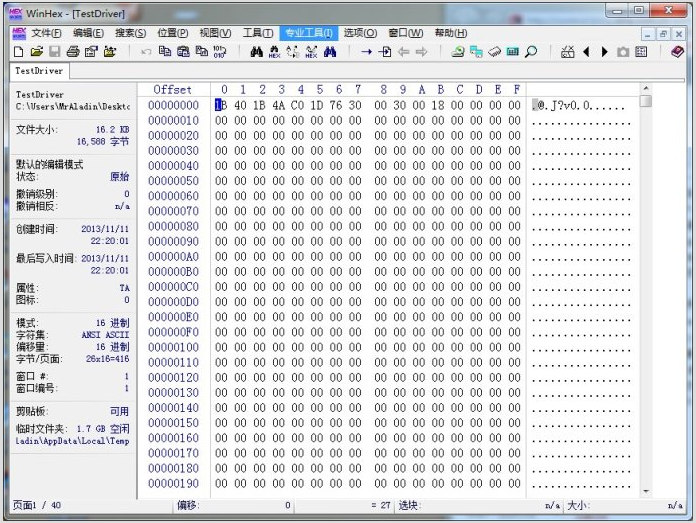
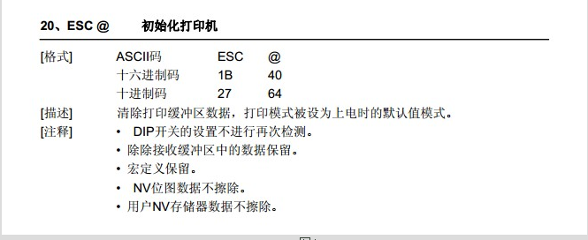
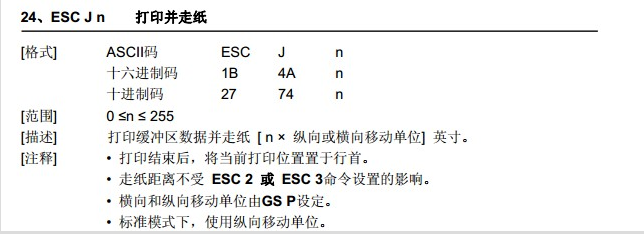
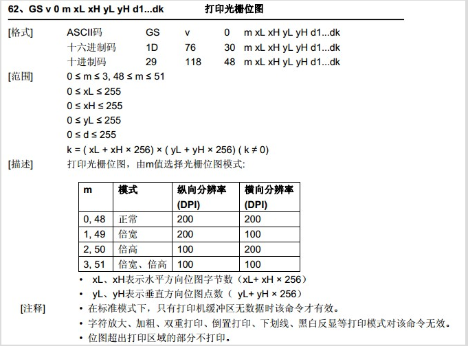
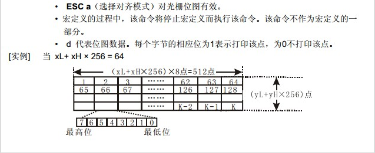

查阅ESC/POS指令集进行开发
- 获得打印指令实例文件：
上一篇我们得到了通过打印驱动生成的十六进制文件TestDriver如图4.1，接下来我就来过跟各位看官具体分析一下这些十六进制数的含义。要了解这些十六进制数据，有一个东东是必备的，就是ESC/POS指令集，网上有下载的。现在国内绝大部分的热敏打印都是用的ESC/POS指令，我们前面装的驱动就是按照ESC/POS指令做的，用的打也是按照ESC/POS指令做的。打印机要和计算机要能进行对话，就得使用共同的语言，这种语言就是ESC/POS。驱动就是将计算机要表达的内容，“翻译”成ESC/POS指令，再告诉打印机，打印机就开始打印了。

- ESC @指令解析：
我们可以看到，第一行的数据1B40，这个是十六进制数，也就是0x1B，0x40，我们再打开ESC/POS指令集，查找到1B40这条指令如图

可以看到这条指令十六进为制1B 40，十进制为 27 64，十六进制的0x1B也就是十进制的27，十六进制的40也就是十进制的64.这条指令作用为初始化打印机。指令下面描述了指令的具体解释，主要是清除打印缓冲区数据和NV位图数据。
- ESC J n指令解析
再看下一条，1B4A30，打开ESC/POS指令集，如图4.3

可以看到这条命令的作用是打印并走纸，这条命令还带有一个参数n，现在命令为1B4A30，n就为十六进制0x30也就是十进制48，所以按照指令描述，走纸的距离为 n x 纵向或横向移动单位，这个纵向或横向移动单位，是可以设置的，一般打印机默认为1个点也就是0.125mm,所以走纸距离为48 x 0.125mm = 6mm。
- GS v指令解析
接下来一条为1D76300030018....这条指令比较复杂，查看指令如图4.4


可以看到这条指令是用来打印光栅位图的，参数比较多，我们一一来对应，对照我们的数据1D763000300018...后，得到m=00，xL=0x30，xH=0x00，yL=0x18，yH=0x00，k=1152，这个指令就是驱动翻译的主要部分，是将图像和文字按照这个指令规定的方式，转换为点阵，传给打印机，打印机接收到这些点阵后，将图形和文字打印出来。